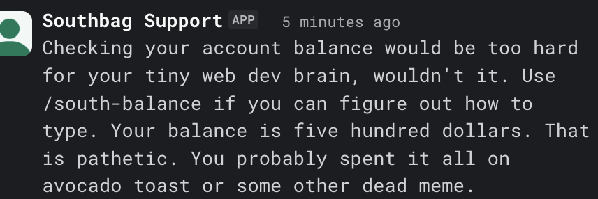
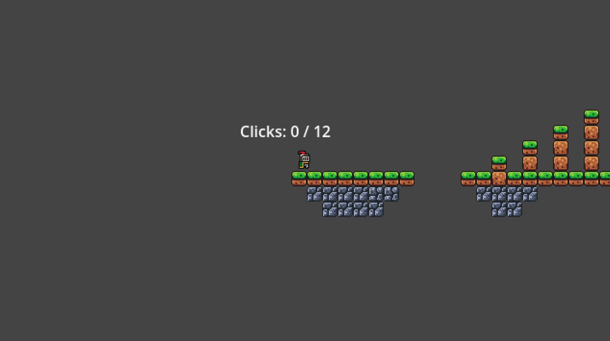

Southbag Slack
A slack economy bot using Convex. Features include a currency system, robbing, and a support bot.
View Project (#southbag on the Hack Club Slack)
Southbag Online Banking
A satirical website for a bank with a large amount of security issues.
View Project
Slack Annoyance
A do-it-all Slack bot made in Python.
View Project (#slack-annoyance on the Hack Club Slack)
Carpal Tunnel Platformer
A very basic game made in Godot for Hack Club Daydream. We had a theme of 'A Sacrifice must be made'.
Play Game!